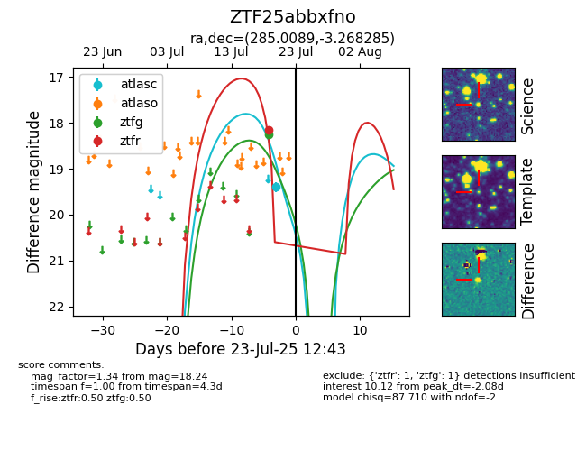

Target ZTF25abbxfno at 2025-07-23 11:52, see:
FINK: fink-portal.org/ZTF25abbxfno
Lasair: lasair-ztf.lsst.ac.uk/objects/ZTF25abbxfno
ALeRCE: alerce.online/object/ZTF25abbxfno
alt names
ZTF25abbxfno (ztf,fink)
coordinates:
equatorial (ra, dec) = (285.0089,-3.26828)
galactic (l, b) = (30.9993,-3.40090)
photometry
last ztfg=18.24, ztfr=18.15
1 ztfg, 1 ztfr detections
